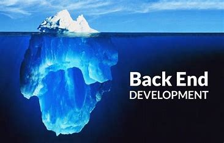
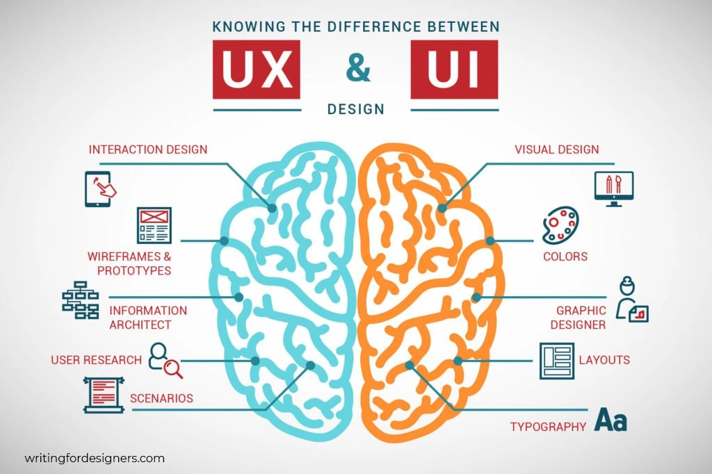

Servicios
-
Desarrollo Front-end
Creamos interfaces interactivas y responsivas usando tecnologías modernas (HTML5, CSS3, JavaScript, React, etc.). Optimización de experiencia de usuario y rendimiento en el navegador.

-
Desarrollo Back-end
Implementación de lógica de servidor, APIs RESTful, bases de datos relacionales y no relacionales. Aseguramos seguridad, escalabilidad y rendimiento en el servidor.
 -
Diseño UI/UX
Diseño centrado en el usuario: wireframes, prototipos y mockups. Investigación de usuario, pruebas de usabilidad y sistemas de diseño consistentes.
 -
Asesoramiento Técnico
Asesoramiento en arquitectura de software, selección de tecnologías y mejores prácticas de desarrollo. Revisión de código y auditorías de seguridad.
-
Soporte Ofimático
Instalación, configuración y resolución de problemas en suites ofimáticas (Office, Google Workspace). Automación de tareas con macros y plantillas personalizadas.
-
Administrador de BDD
Diseño, implementación y mantenimiento de bases de datos SQL (MySQL, PostgreSQL) y NoSQL (MongoDB). Respaldo, recuperación y optimización de consultas.
-
Reparación de Equipos
Diagnóstico y reparación de hardware en PCs y notebooks. Reemplazo de componentes, formateo y reinstalación de sistemas operativos.
-
Consultoría Técnica
Orientación en compra de hardware, configuración de redes, y soluciones integrales para pequeñas y medianas empresas. Soporte remoto y presencial.